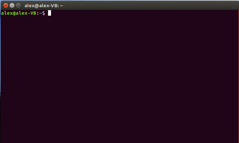

Лабораторная #8 по ОС
- Введение
- Используемые команды/утилиты
- Файловый менеджер
- Установка\удаение программ
- Настройки системы
- Контрольные вопросы
- Ссылки
Лабораторная работа №8 - Основы Unix-систем.
Цель работы: Получить представление о работе с терминалом в Unix-системах.Введение
Знакомство с Unix-систеомой начнём с текстового интерфейса т.е. терминала, потому что основная часть работы в подобных системах будет происходит в нём, когда говориться о "работе" имеется в виду какая-нибудь разработка ПО или что-то подобное.
Итак, давайте сначала посмотрим что из себя представляет этот самый терминал.
Найти его можно в меню Приложения→Стандартные. Так же вытащите его на панель быстрого доступа.
Запустив его вы увидите примерно такое окошечко:
Знакомьтесь, это и есть терминал. Он создан для того, чтобы выполнять текстовые команды, поэтому отложите свою мышку в сторону и пододвиньте поближе клавиатуру.
Набирать такие команды с клавиатуры посимвольно немного неудобно, поэтому давайте сразу разберёмся с основами управления терминалом. Начнём с копирования/вставки. Стандартные сочетания клавиш Ctrl+C и Ctrl+V в терминале не работают, вместо них используется старая добрая пара Ctrl+Insert с Shift+Insert или же сочетания с Shift: Ctrl+Shift+C для копирования и Ctrl+Shift+V для вставки. Что ж, теперь вы умеете целиком копировать команды из руководств.
Однако обычно всё-таки команды приходится набирать вручную, а не вставлять откуда-то. И вот тут на помощь приходит великолепное свойство терминала, называемое автодополнением. Наберите в терминале символы apti, а потом нажмите клавишу Tab. Терминал автоматически дополнит за вас команду. Кстати, aptitude - это основная консольная утилита управления установкой и удалением приложений, но об этом после.
А теперь попробуйте набрать только apt и нажать Tab. Ничего не происходит? А теперь нажмите Tab два раза подряд. Видите, терминал выдал вам список всех команд, начинающихся с apt.
И так же по поводу того, что идёт перед знаком $, в моём случае alex@alex-VB:~$
Первым идет имя пользователя, который будет запускать данную команду. Через символ @ от него идет имя машины, которое вы вводили при установке. Дальше через двоеточие указывается текущая директория, в которой вы находитесь и после нее символ $ либо # (второй вариант в случае, если вы работаете от имени суперпользователя, что будет рассмотрено далее).
Домашняя директория пользователя, обозначается обычно ~ (тильда). Если вы до этого работали только с Windows, то придется немного изменить «мировоззрение» относительно файловой системы. Многие привыкли к тому, что весь винчестер в их распоряжении и на диске D:\, например, обычно получается свалка из каталогов (например, Music, Video, Install) и файлов («временные» файлы, которые вы обязательно собираетесь куда-нибудь переместить в будущем и которые «живут» там уже не первый год).
Здесь немного иная ситуация. Хотя, в принципе, вы можете сделать то же самое, решать вам. В Linux-системах, обычно, личные файлы хранятся в домашней директории пользователя. В принципе, есть люди, которые делают тоже самое и в Windows. Пример такой директории: C:\Documents and Settings\логин\My Documents.
Домашняя директория пользователя это такая директория, в которой пользователь является хозяином и может делать там все что угодно. Путь к этой директории следующий:
/home/логин/ под логином понимается имя пользователя при помощи которого он заходит в систему.
Все остальные директории нужны для других целей. Например, /bin/ содержит исполняемые файлы, /root/ является домашней директорией суперпользователя, /boot/ нужен для загрузчика и т.д.Поэтому всякий раз когда вы запускаете консоль, вы попадаете в домашнюю директорию текущего пользователя за которого зашли в систему. Мало того, вы не будете иметь доступ на запись к другим директориям, если только не будете действовать от имени суперпользователя.
Меню у всех программ находится наверху, привыкайте. Немного настроет терминала. Для того, что изменить цветовую расцветку терминала, ну и познакомиться с дополнительными настройками, наведите мышку на строку сверху, на ней ничего не будет, но при наведении мыши, появятся пункты меню
Покопайтесь в настройках, сделайте так как вам удобно, например, чтобы новые терминалы отображались как вкладки, а не как новые окна. Например, чтобы изменить цветовую расцветку, перейдите Терминал -> Параметры-> Профили -> Изменить
Системная консоль — это монитор и клавиатура, связанные непосредственно с системой. Для входа в систему под несколькими учетными записями, используя один монитор и одну клавиатуру, система обеспечивает доступ к виртуальным консолям, которые позволяют войти в систему под несколькими именами в одно время. Сеанс работы начинается со входа в систему, для чего пользователь должен ввести свое имя и пароль. Для завершения сеанса работы с системой вы можете воспользоваться командой exit или сочетанием клавиш CTRL-D.
Оболочка (shell, командный интерпретатор) — это программа, которая воспринимает введенные пользователем данные и транслирует это в системные команды. Оболочка запускается сразу после входа пользователя в систему. Используя язык обращения к оболочке можно создавать скрипты.
Рабочая среда — это множество переменных, к которым имеют доступ все выполняемые команды.
Основные команды
Синтаксис команд интерпретатора можно представить в следующем обобщенном виде:
$ имя_команды [-ключи] [аргумент [аргументы]] <Enter>
Приглашение $ и управляющая клавиша <Enter> необходимы для синхронизации работы операционной системы и пользователя. Квадратные скобки ([]) в записи команды указывают на необязательные параметры, угловые скобки (<>) – на обязательные параметры. Скобки используются только при описании синтаксиса команд и не вводятся при их выполнении. Символ | означает несколько возможных вариантов, а многоточие (...) - то, что параметр может повторяться.
Для получения информации о порядке использования команд, изучаемых в ходе выполнения лабораторной работы, используйте команду man:
man команда
Используемые команды в текущей лабораторной работе
- alias - вывод списка или создание нового алиаса для команды
- date - вывод или установка системной даты и времени
- df - вывод информации об использовании дискового пространства
- env - вывод информации о среде, запуск приложений с измененными переменными среды
- exit - завершение сеанса работы
- hostname - вывод имени машины
- man - вывод справки по команде
- uname - вывод системной информации
- whereis - вывод информации о расположении файла
- which - вывод полного пути до файла вызываемого командой
- pwd - показывает путь до текущей директории
- cd - смена текущей директории
- ls - вывод содержимое текущей директории
- clear - очистка экрана терминала
- touch - создание пустого файла
- sudo - выполнение команд от имени администратора
- history - история введенных команд
- mkdir - создание директории
- rmdir - удаление директории
- rm - удаление файла
- cat - вывод содержимого текстового файла
- cp - копирование файлов и каталогов
- find - поиск файлов в каталоге
- free - предоставляет информацию об использованной и неиспользованной памяти
- echo - вывод сообщений, переменных и т.д.
- passwd - изменение пароля пользователя
- head - вывод первый строк файла
- more - постраничный вывод файла
- tail - выводит последние строки файла
- sort - сортировка вывода и строк в файле
- mv - перемещение файлов
- wc - подсчет количества строк в файле
- > - перенаправление ввода\вывода
- grep - осуществляет поиск строки
- wget - что то скачать из сети
- arch - выводит архитектуру компьютера
Задание:
- Определите имя вашего пользователя.
- Определите имя машины. Найдите две разные команды, которыми можно это сделать.
- Определите архитектуру процессора машины, используемой вами
- Выведите на экран время и дату в формате «31/12/2099 23:59».
- Создайте дерево каталогов в домашней директории, создать папку с именем lab перейти в папку и создать в ней папку root и в root ещё три подпапки home и etc и dev. В home создать подпапки doc, music, picture и пустой файл с именем coolstory, файл открыть в текстовом редакторе и записать туда какой либо текст (желательно парочку средних предложений). В etc создать 3 пустых файла. В dev создать 2 подкаталога с именами input и bus и 2 пустых файла с расширением txt cdrom и dvd. В конце с помощью команды просмотреть все дерево каталогов и вывести список файлов каждой вышесозданной директории при помощи команды ls
- Скопировать вышеописанные каталоги и файлы и поместить рядом, старые удалить поочерёдно используя команды rm, rmdir.
- В вышеописанный каталог(который мы ещё и скопировали) picture - скопировать изображение
- Изучить принцип работы wget, найти прямую ссылку на мызыкальную композицию и при помощи вышеописанной команды скачать музыку в папку music
- При помощи утилиты grep найти тот самый текст (по отдельным словам, весь текст вбивать не надо), который вы записывали в файл выше.
- При помощи утилиты cat - вывести файл какой либо
- При помощи утилиты sort - отсортировать вывод какого либо файла (чтобы что то отсортировать у вас должно что то быть, поэтому перед этим создадите текстовый файл и запишите туда информацию которую можно сортировать)
- Вывести в консоль какое либо сообщение, затем перенаправить это сообщение в файл
- При помощи утилиты find найти файлы или каталоги
- Вывести информацию о используемой памяти
- Выведите на экран переменные среды. Объясните, что означают переменные SHELL, USER, PATH, HOME, LANG, MAIL, PS1.
- Запустите приложение bash, изменив переменную домашнего каталога пользователя. Проверьте, что изменения вступили в силу. Как это можно сделать?
- Вывести историю команд и зафиксировать её, полностью. Это послужит доказательством проделанной работы и + все вышеописанное.
Файловый менеджер
Файловый менеджер Nautilus, чтобы запустить нажмите на его значок от панели слева, либо запустите из консоли
Либо вызвать его из консоли, как и любое другую программу. Смысл у них в принципе тот же самый, только если запускать их через терминал, можно его запустить его через sudo
Перед вами предстаёт домашняя директория. Все тоже самое, что и через консоль. Разницы нет.
Для того, чтобы посмотреть, что находится на самом компьютере, т.е. системные файлы, требуется в левом меню нажать на кнопку «Компьютер». Вон даже видна домашняя папка пользователей Home.
Настройки системы
Настройки системы, основные настройки находятся вот тут, надо нажать на значок шестерёнки на боковой панели.
Установка\удаление программ
Время от времени появляются новые задачи, либо необходимость в решении старых задач новыми способами — тогда возникает потребность в дополнительном программном обеспечении. Данная статья рассказывает, что делать, если вам нужна новая программа для Ubuntu. В Ubuntu, как и в других операционных системах, есть понятие зависимостей. Это значит, что программу можно установить, только если уже установлены пакеты, от которых она зависит. Такая схема позволяет избежать дублирования данных в пакетах (например, если несколько программ зависят от одной и той же библиотеки, то не придётся пихать эту библиотеку в пакет каждой программы — она поставится один раз отдельным пакетом). В отличие от, например, Slackware или Windows, в Ubuntu зависимости разрешаются пакетным менеджером (Synaptic, apt, Центр приложений, apt-get, aptitude) — он автоматически установит зависимости из репозитория. Зависимости придётся устанавливать вручную, если нужный репозиторий не подключен, недоступен, если нужного пакета нет в репозитории, если вы ставите пакеты без использования пакетного менеджера (используете Gdebi или dpkg), если вы устанавливаете программу не из пакета (компилируете из исходников, запускаете установочный run/sh скрипт).
Установка из репозиториев
Репозиторий - место централизованного хранения пакетов программного обеспечения. Использование репозиториев позволяет упростить установку программ и обновление системы. Пользователь волен выбирать, какими репозиториями будет пользоваться, и даже может создать собственный. Список используемых репозиториев содержится в файле /etc/apt/sources.list и в файлах каталога /etc/apt/sources.list.d/, проще всего его посмотреть через специальное приложение, которое можно вызвать через главное меню: Система→Администрирование→Источники Приложений, или через Менеджер пакетов Synaptic.
Если вы не добавляли локальные репозитории (например, CD/DVD диски), то для установки программ из репозиториев вам понадобится интернет.
У такого метода установки программ есть масса преимуществ: это просто удобно, вы устанавливаете уже протестированные программы, которые гарантированно будут работать на вашей системе, зависимости между пакетами будут решаться автоматически, при появлении в репозитории новых версий установленных программ вас об этом проинформируют.
С использованием командной строки
Установка из командной строки позволяет получить больше информации о процессе установки и позволяет гибко его настраивать, хотя и может показаться неудобной начинающему пользователю.
ДЛЯ ДАЛЬНЕЙШИХ ДЕЙСТВИЙ ТРЕБУЕТСЯ ЧТОБЫ ВЫША ВИРТУАЛЬНАЯ МАШИНА БЫЛА ПОДКЛЮЧЕНА К СЕТИ ИНТЕРНЕТ!
Запустите терминал. Обновить данные о доступных в репозиториях программах можно командой:sudo apt-get update
По запросу введите пароль. Учтите, что при вводе в терминале пароль не отображается, ни звёздочками, ни кружками, никак. Это нормально. Для установки нужной программы введите команду:
sudo apt-get install имя_программы
sudo apt-get install libsexymm2
Если нужно установить несколько программ, то их можно перечислить через пробел, например:
sudo apt-get install libsexymm2
Если потребуется - ответьте на задаваемые вопросы (для положительного ответа нужно ввести Y или Д). Программа будет установлена, если она уже установлена - она будет обновлена.
Значит собственно сама установка и первое что мы установим будет редактор sublime:
sudo add-apt-repository ppa:webupd8team/sublime-text-2 #данная команда добавить для системы новые репозитории, откуда можно качать установочные файлы
sudo apt-get update #обновляет пакеты в репозитории, проверяет версии пакетов в репозитории, скачивает инфу о пакетах в подключенных репозиториях
sudo apt-get install sublime-text #собственно установка самой программы
Чтобы запустить его наберите команду subl в терминале.
Установка черех deb пакеты. Чтобы что то установить, надо что то скачать, поэтому скачаем какой-нибудь deb пакет. Выполним команду:
wget archive.getdeb.net/ubuntu/pool/apps/u/ubuntu-tweak/ubuntu-tweak_0.8.7-1~getdeb2~xenial_all.deb #утилита wget скачает файл в текущую директорию
Вот скачанный deb пакет в домашней директории, собственно где была выполненная команда.

Вызовем контекстное меню и выберем первый пункт - открыть с помощью "Установки приложений. По сути это магазин приложений с различными приложениями, которые через этот магазин можно выбрать и установить."
Нажать на кнопку установить.
Ввести пароль суперпользователя (тот которые вы вводите при входе в систему)
Контрольные вопросы
- Опишите две реальные ситуации, когда вам может понадобиться получить дату и время в консоли UNIX.
- Что такое среда пользователя? Опишите, как добавить новую переменную в среду, как изменить значение существующей переменной для одного пользователя и всех пользователей в системе.
- Опишите одну реальную ситуацию, когда вам может понадобиться изменить переменную среды при запуске приложения.
- Какие основные каталоги системы вы знаете? Каково их назначение?
- Как обратиться к файлу, который находится в каталоге, расположенном выше относительно текущего в дереве каталогов системы?
- Какие условия поиска файлов вы знаете? Как их можно комбинировать?
- Как узнать имя файла и размер файла?
- Как осуществить поиск файлов в системе каталогов по фрагментам текста файлов?
- Назовите известные вам способы создания пустых файлов.
- Какими возможностями обладает команда sort?